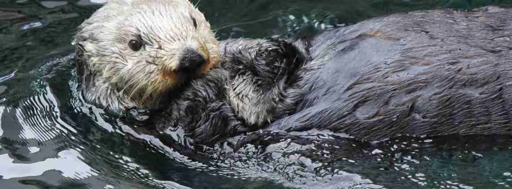

Amazing Animals of the World
| Amazing Animals of the World |
| Endangered |
African elephant |
Loxodonta africana |
Africa |
Herbivores living in tropical and subtropical moist broadleaf forets,
flooded grasslands and savannas, miombo woodlands, and Acacia
savannas.
|
Two African elephant species: savanna and forest. Savanna elephants
are larger with outward-curving tusks.
|

|
| Orangutan |
Pongo abelii, Pongo pygmaeus |
Asia |
Lowland tropical forests; mostly solitary lifestyle. |
Herbivores |
Orangutans share 96.4% of human DNA and are highly intelligent. |
 |
| Unique Adaptation |
Sea Otter |
Enhydra lutris |
North America |
Coastal marine environments, especially kelp forests. |
Carnivorous — urchins, clams, mussels, crabs, snails. |
Dense fur, buoyancy, tool use, rafting groups, and high-energy
foraging help sea otters survive in cold waters.
|
 |
| Continent Location |
Platypus |
Ornithorhynchus anatinus |
Australia |
Freshwater rivers, streams, creeks, lakes with vegetation. |
Carnivorous — aquatic invertebrates, shrimp, larvae, worms. |
One of the only egg-laying mammals; males have venomous spurs. |
 |
| Greenland Shark |
Somniosus microcephalus |
Arctic |
Deep, cold Arctic and North Atlantic waters (200–600+ m). |
Carnivorous — fish, seals, squid, carrion. |
One of the longest-living vertebrates: 250–500 years. |

|
| Capybara |
Hydrochoerus hydrochaeris |
South America |
Wetlands, riverbanks, marshes, savannas, forests near water. |
Herbivorous — grasses, aquatic plants, fruits, bark. |
Largest rodents in the world; live in social groups of 10–20+. |
 |
| Alpine Ibex |
Capra ibex |
Europe |
Rocky alpine and subalpine regions (6,500–15,000 ft). |
Herbivorous — grasses, herbs, moss, shrubs, lichens. |
Can climb near-vertical cliffs and dam walls for minerals.

|